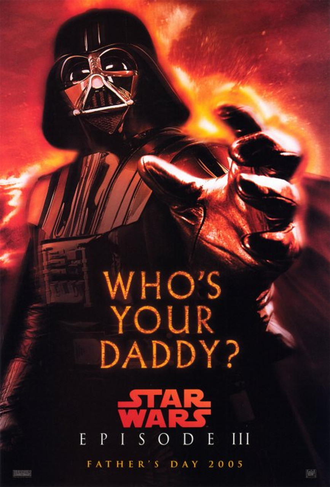

Star Wars: Episodio III - La venganza de los Sith
Acción | Ciencia ficción
Las Guerras de clones empezaron hace 3 años, en donde los Jedi rescatan a Palpatine del conde Dooku,
y Obi-wan le sigue la pista a una nueva amenaza, mientras Anakin actúa como agente doble.
Director: George Lucas
Reparto: Hayden Christensen, Natalie Portman, Ewan McGregor
Duración: 2h 20m